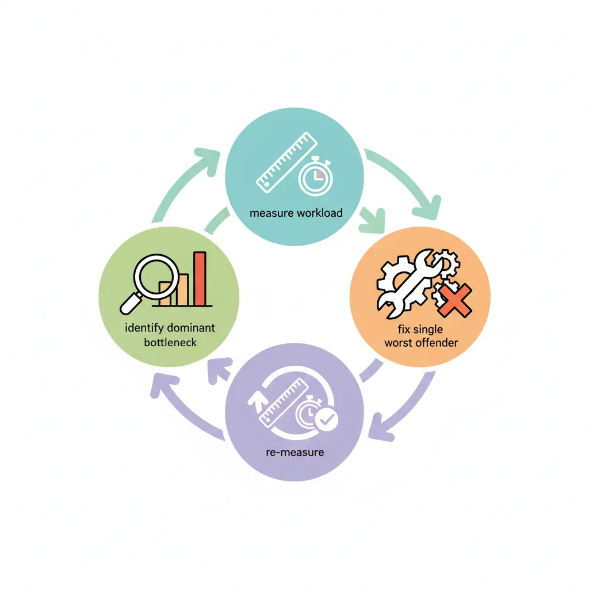
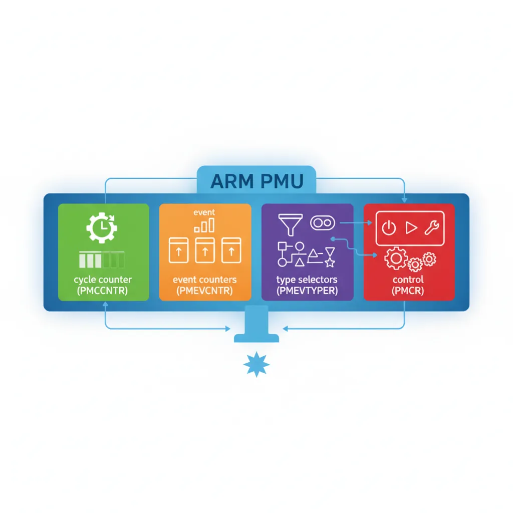
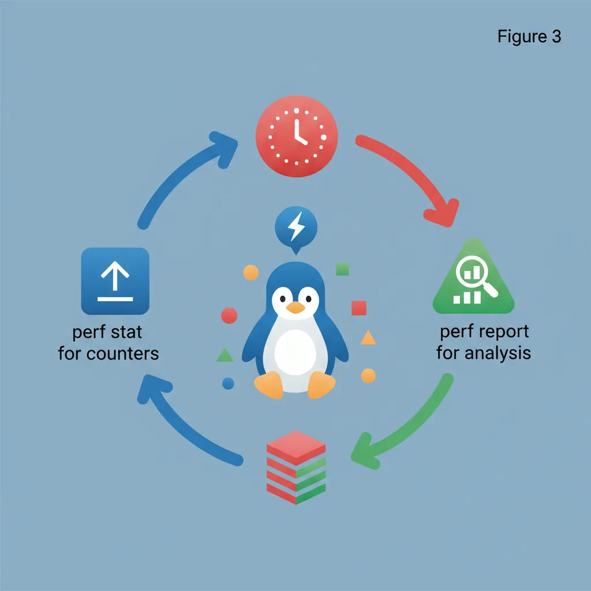
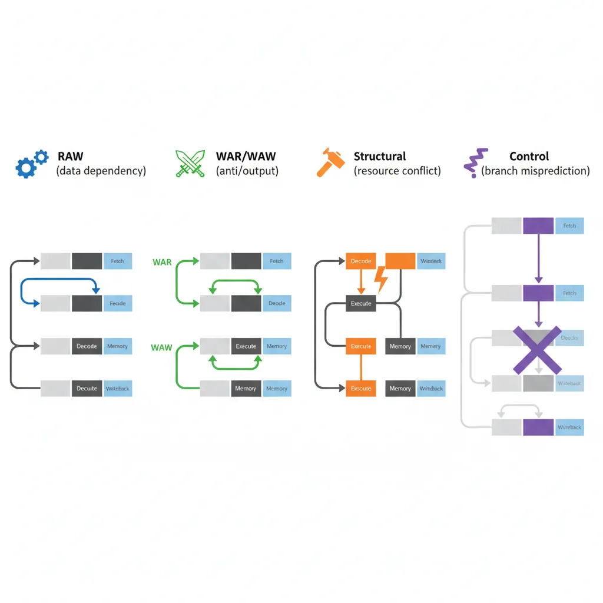
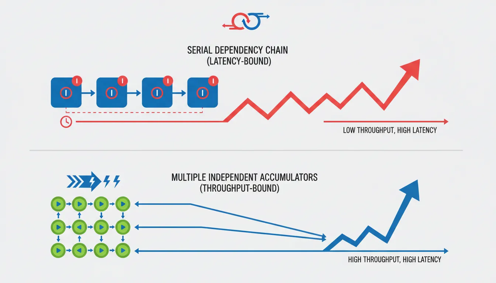

Introduction & Profiling Philosophy
ARM Assembly Mastery
Architecture History & Core Concepts
ARMv1→v9, RISC philosophy, profilesARM32 Instruction Set Fundamentals
ARM vs Thumb, registers, CPSR, barrel shifterAArch64 Registers, Addressing & Data Movement
X/W regs, addressing modes, load/store pairsArithmetic, Logic & Bit Manipulation
ADD/SUB, bitfield extract/insert, CLZBranching, Loops & Conditional Execution
Branch types, link register, jump tablesStack, Subroutines & AAPCS
Calling conventions, prologue/epilogueMemory Model, Caches & Barriers
Weak ordering, DMB/DSB/ISB, TLBNEON & Advanced SIMD
Vector ops, intrinsics, media processingSVE & SVE2 Scalable Vector Extensions
Predicate regs, gather/scatter, HPC/MLFloating-Point & VFP Instructions
IEEE-754, scalar FP, rounding modesException Levels, Interrupts & Vector Tables
EL0–EL3, GIC, fault debuggingMMU, Page Tables & Virtual Memory
Stage-1 translation, permissions, huge pagesTrustZone & ARM Security Extensions
Secure monitor, world switching, TF-ACortex-M Assembly & Bare-Metal Embedded
NVIC, SysTick, linker scripts, low-powerCortex-A System Programming & Boot
EL3→EL1 transitions, MMU setup, PSCIApple Silicon & macOS ABI
ARM64e PAC, Mach-O, dyld, perf countersInline Assembly, GCC/Clang & C Interop
Constraints, clobbers, compiler interactionPerformance Profiling & Micro-Optimization
Pipeline hazards, PMU, benchmarkingReverse Engineering & ARM Binary Analysis
ELF, disassembly, CFR, iOS/Android quirksBuilding a Bare-Metal OS Kernel
Bootloader, UART, scheduler, context switchARM Microarchitecture Deep Dive
OOO pipelines, reorder buffers, branch predictVirtualization Extensions
EL2 hypervisor, stage-2 translation, KVMDebugging & Tooling Ecosystem
GDB, OpenOCD/JTAG, ETM/ITM, QEMULinkers, Loaders & Binary Format Internals
ELF deep dive, relocations, PIC, crt0Cross-Compilation & Build Systems
GCC/Clang toolchains, CMake, firmware genARM in Real Systems
Android, FreeRTOS/Zephyr, U-Boot, TF-ASecurity Research & Exploitation
ASLR, PAC attacks, ROP/JOP, kernel exploitEmerging ARMv9 & Future Directions
MTE, SME, confidential compute, AI accelProfiling has a three-step loop: measure the actual workload, identify the dominant bottleneck (memory bandwidth, compute throughput, branch misprediction, cache miss), fix the single worst offender, then re-measure. Skipping the measurement step produces clever-but-wrong optimizations.

perf stat is your lab report: it summarises the numbers. perf record is the MRI: it shows where in the code the symptoms occur. Just as a doctor treats the most life-threatening condition first (not the mild headache), you fix the dominant bottleneck — the one consuming the most cycles — before touching anything else. "Optimizing" a function that accounts for 2% of runtime is cosmetic surgery, not treatment.
ARM PMU Hardware Counters
PMU Register Map
AArch64 exposes PMU registers as System Registers accessible via MRS/MSR. Key registers:

PMCR_EL0 — control: E=enable all, C=cycle reset, P=counter reset, N=num counters, LC=64-bit cycles
PMCNTENSET_EL0 — counter enable set: bit 31 = cycle counter, bits 0–30 = event counters
PMCNTENCLR_EL0 — counter enable clear (complement of above)
PMCCNTR_EL0 — 64-bit CPU cycle counter
PMEVCNTR<n>_EL0 — event counter n (n = 0 to PMCR_EL0.N-1)
PMEVTYPER<n>_EL0 — event type for counter n (lower 16 bits = event code)
PMUSERENR_EL0 — user-mode enable: EN=1 allows EL0 reads of all PMU registers
PMINTENSET_EL1 — PMU interrupt enable (for overflow interrupts)
Enabling EL0 Access
// Kernel driver or module / device tree overlay to enable EL0 PMU access
// On Linux 4.4+: perf_event subsystem manages PMU via kernel driver
// For bare-metal / custom kernel: set PMUSERENR_EL0 at EL1
// EL1 initialization (in kernel or bare-metal init code)
void pmu_init_el1(void) {
uint64_t reg;
// Enable PMUSERENR_EL0: allow EL0 to read cycle counter
asm volatile("mrs %0, pmuserenr_el0" : "=r"(reg));
reg |= (1UL << 0); // EN: enable EL0 access to all PMU registers
reg |= (1UL << 2); // CR: allow EL0 to read cycle register
asm volatile("msr pmuserenr_el0, %0" : : "r"(reg));
// Enable cycle counter via PMCNTENSET_EL0
asm volatile("msr pmcntenset_el0, %0" : : "r"(1UL << 31));
// Set PMCR_EL0: enable (E), reset cycle (C), reset event counters (P), 64-bit cycle (LC)
asm volatile("mrs %0, pmcr_el0" : "=r"(reg));
reg |= (1 << 0) | (1 << 1) | (1 << 2) | (1 << 6);
asm volatile("msr pmcr_el0, %0" : : "r"(reg));
asm volatile("isb");
}Reading Counters from C
#include <stdint.h>
// Read CPU cycle counter (requires PMUSERENR_EL0.EN=1 from EL1)
static inline uint64_t pmu_cycles(void) {
uint64_t cyc;
asm volatile("isb\n\t" // Serialize instruction stream
"mrs %0, pmccntr_el0"
: "=r"(cyc) : : "memory");
return cyc;
}
// Common PMU event codes (ARMv8 architecture events)
#define PMU_SW_INCR 0x0000 // Software increment
#define PMU_L1I_CACHE_REFILL 0x0001 // L1 instruction cache refill
#define PMU_L1I_TLB_REFILL 0x0002 // L1 instruction TLB refill
#define PMU_L1D_CACHE_REFILL 0x0003 // L1 data cache refill
#define PMU_L1D_CACHE 0x0004 // L1 data cache access
#define PMU_L1D_TLB_REFILL 0x0005 // L1 data TLB refill
#define PMU_INST_RETIRED 0x0008 // Instructions architecturally executed
#define PMU_EXC_TAKEN 0x0009 // Exception taken
#define PMU_BR_MIS_PRED 0x0010 // Mispredicted or not predicted branches
#define PMU_CPU_CYCLES 0x0011 // Cycle counter alias
#define PMU_BR_PRED 0x0012 // Predictable branch speculatively executed
#define PMU_MEM_ACCESS 0x0013 // Data memory access
#define PMU_L1I_CACHE 0x0014 // L1 instruction cache access
#define PMU_L1D_CACHE_WB 0x0015 // L1 data cache write-back
#define PMU_L2D_CACHE 0x0016 // L2 data cache access
#define PMU_L2D_CACHE_REFILL 0x0017 // L2 data cache refill
// Configure event counter 0 to count L1D cache misses
void pmu_set_event(int counter, uint32_t event_code) {
// Set event type for counter n
asm volatile("msr pmselr_el0, %0" : : "r"((uint64_t)counter));
asm volatile("isb");
asm volatile("msr pmxevtyper_el0, %0" : : "r"((uint64_t)event_code));
// Enable this counter
asm volatile("msr pmcntenset_el0, %0" : : "r"(1UL << counter));
}
// Read event counter n using PMSELR_EL0 + PMXEVCNTR_EL0
uint64_t pmu_read_counter(int counter) {
uint64_t val;
asm volatile("msr pmselr_el0, %0" : : "r"((uint64_t)counter));
asm volatile("isb");
asm volatile("mrs %0, pmxevcntr_el0" : "=r"(val));
return val;
}Linux perf stat & perf record

# Basic perf stat — measure cycle/instruction/cache-miss counts
perf stat ./my_binary
# Specific ARM PMU events (use perf list for full list)
perf stat -e cycles,instructions,cache-misses,cache-references,\
branch-misses,branches,L1-dcache-load-misses ./my_binary
# Per-function profiling with symbol resolution
perf record -g ./my_binary
perf report --stdio # Text report
perf report # Interactive TUI
# Measure a specific function with annotated assembly
perf record -e cycles:pp --call-graph dwarf ./my_binary
perf annotate my_function
# Topdown analysis (requires Arm CoreTile / Neoverse PMU driver)
perf stat -e armv8_pmuv3/topdown-retiring/,\
armv8_pmuv3/topdown-bad-spec/,\
armv8_pmuv3/topdown-fe-bound/,\
armv8_pmuv3/topdown-be-bound/ ./my_binary
# Count only specific functions (using probes)
perf probe -x ./my_binary my_asm_routine
perf stat -e probe_my_binary:my_asm_routine,cycles ./my_binaryPipeline Hazard Classification

RAW (Read After Write) — Data dependency hazard
Most common. Instruction N writes a register that instruction N+1 reads. On in-order pipelines this stalls until the result is available. On OOO cores the scheduler may find other independent instructions to fill the slots.
Fix: Reorder instructions to introduce independent work between producer and consumer. Use LDP/STP to hide load latency.
WAR (Write After Read) — Anti-dependency
N reads a register that N-1 writes. In OOO with register renaming this is transparent. In explicitly scheduled code, can surface as stalls on in-order micro-ops.
Fix: Use a different destination register.
WAW (Write After Write) — Output dependency
Two instructions write the same register; the second must follow the first. Register renaming eliminates this in hardware.
Fix: Use different destination registers when possible.
Structural hazard
Two instructions need the same execution unit in the same cycle (e.g., two FP divides; only one FDIV unit). Compiler/assembler scheduling must respect issue slots.
Fix: Interleave non-competing instructions (e.g., integer ops between FP divides).
Control hazard (branch misprediction)
Speculative execution fetches the wrong path; misprediction flushes the OOO window and refetches. Cortex-A72 mispredict penalty ≈ 15 cycles; Neoverse N1 ≈ 10 cycles.
Fix: CSEL/CSINC for short conditionals. Restructure loops to be loop-carried-dependency–free. Sort data to increase branch predictability.
Throughput vs Latency

// ===== Loop dominated by LATENCY (critical path through chain of dependent adds) =====
// Bad: each ADD depends on the previous — serial dependency chain
// On Cortex-A55 (1-cycle ADD latency), this is 1 ADD/cycle regardless of ports
loop_latency:
add x0, x0, x1 // depends on previous x0
add x0, x0, x2 // depends on previous x0
add x0, x0, x3 // depends on previous x0
add x0, x0, x4 // depends on previous x0
subs x5, x5, #1
b.ne loop_latency
// ===== Loop limited by THROUGHPUT (independent work, fills issue slots) =====
// Better: 4 independent accumulators use separate ALU slots in parallel
loop_throughput:
add x10, x10, x1 // accumulator 1
add x11, x11, x2 // accumulator 2 — independent
add x12, x12, x3 // accumulator 3 — independent
add x13, x13, x4 // accumulator 4 — independent
subs x5, x5, #1
b.ne loop_throughput
add x10, x10, x11 // combine at end
add x12, x12, x13
add x0, x10, x12Micro-Benchmarking Methodology
#include <stdint.h>
#include <stdio.h>
// Step 1: Serialise before/after with ISB to prevent out-of-order crossing
// Step 2: Warm up caches/branch predictor (run the loop once before timing)
// Step 3: Run multiple iterations and take the MINIMUM (not average) — the
// minimum is closest to hardware capability; spikes are OS noise
static inline uint64_t rdcyc(void) {
uint64_t v;
asm volatile("isb\n\tmrs %0, pmccntr_el0" : "=r"(v) : : "memory");
return v;
}
#define BENCH_ITERS 1000
#define BENCH_INNER 10000
typedef void (*bench_fn)(void);
// Measure minimum cycles across BENCH_ITERS runs of fn() with BENCH_INNER loops
uint64_t bench_min_cycles(bench_fn fn, int inner_loops) {
uint64_t min = UINT64_MAX;
for (int i = 0; i < BENCH_ITERS; i++) {
uint64_t start = rdcyc();
// Call with inner_loops to amortise rdcyc() overhead
fn(); // warm/inner loop happens inside fn
uint64_t end = rdcyc();
uint64_t elapsed = end - start;
if (elapsed < min) min = elapsed;
}
return min;
}
// Example: benchmark a simple NEON dot product
#include <arm_neon.h>
static float a[1024], b[1024];
void bench_dot_neon(void) {
float32x4_t acc = vdupq_n_f32(0.0f);
for (int i = 0; i < 1024; i += 4) {
acc = vfmaq_f32(acc, vld1q_f32(a+i), vld1q_f32(b+i));
}
// Prevent dead-code-elimination: "use" the result
volatile float r = vaddvq_f32(acc);
(void)r;
}
int main(void) {
// Prime caches
bench_dot_neon();
uint64_t cyc = bench_min_cycles(bench_dot_neon, 1);
double cyc_per_elem = (double)cyc / 1024.0;
printf("NEON dot 1024 floats: min %lu cycles (%.2f cyc/elem)\n",
(unsigned long)cyc, cyc_per_elem);
return 0;
}Practical Optimization Patterns
Unrolling reduces loop overhead (SUBS+B.NE = 2 instructions per element) and exposes more independent instructions to the OOO scheduler. Unroll factor of 4–8 typically optimal; beyond that, register pressure limits gains.
PRFM PLDL1KEEP, [x0, #256] — hint to hardware prefetcher to load cache line at address (x0+256) into L1-D. Use when the hardware stride prefetcher can't detect the pattern (e.g., pointer-chasing). Prefetch distance = latency × bandwidth. Over-prefetching pollutes the cache.
Replace short if/else with CSEL Xd, Xn, Xm, <cond>. No branch = no misprediction = no 10–15 cycle flush. Works when both values are already computed (no side effects in the branch body). The compiler does this automatically with -O2 for simple ternaries; inline asm for complex cases.
Overlap iteration N's computation with iteration N+1's load. Classic pattern: LDR Xn, [ptr, #STRIDE] at the bottom of iteration N starts the load early; the data is consumed at the top of iteration N+1, hiding the L1D load latency (4 cycles on Cortex-A55). Requires one loop prolog load and one epilog.
Case Study: AWS Graviton3 Migration Profiling
Profiling a Redis-like Cache on Neoverse V1
When a cloud provider migrated their Redis-compatible in-memory cache from Intel Xeon (Ice Lake) to AWS Graviton3 (Neoverse V1), initial benchmarks showed 15% slower throughput on ARM — surprising given Graviton3's competitive IPC. The profiling investigation uncovered three issues:
- Branch misprediction spike:
perf stat -e branch-missesshowed 8.3% miss rate on the hash table lookup path (vs 2.1% on Intel). Root cause: the hash function usedCRC32C— Intel had a hardware CRC instruction, but the ARM build fell back to a software polynomial table with unpredictable branches. Fix: switched to__crc32cd()ARM CRC intrinsic (ARMv8.1-A), reducing branch misses to 1.8%. - L1D cache miss on atomic operations: PMU counter
L1D_CACHE_REFILLwas 3× higher than expected. The LDXR/STXR atomic increment in the per-shard counter was causing excessive cacheline bouncing across Graviton3's 64 cores (each core has its own L1). Fix: switched to per-CPU counters with periodic aggregation, reducing L1D refills by 60%. - Memory bandwidth ceiling:
perf stat -e armv8_pmuv3/bus_access/showed the workload was saturating DDR bandwidth during bulk SCAN operations. Fix: addedPRFM PLDL1KEEPprefetch hints 256 bytes ahead in the key iteration loop, improving SCAN throughput by 22%.
Result: After all three fixes, Graviton3 throughput was 31% higher than the original Intel baseline — at 40% lower cost per hour. None of these optimizations would have been found without PMU-guided profiling.
From Hardware Logic Analyzers to PMU Counters
In the early ARM days (ARM2, 1986), performance profiling meant connecting a logic analyzer to the external bus and counting clock edges manually. The first on-chip performance monitoring appeared in ARM9E (late 1990s) with a simple cycle counter. ARMv6 introduced the PMU specification with 4 configurable event counters. ARMv7 standardized the interface (CP15 access, event codes), and ARMv8 moved everything to System Registers (MSR/MRS) with up to 31 counters and architecture-defined event codes. Modern Neoverse cores (V1, N2) support 6+ configurable counters with Arm's Statistical Profiling Extension (SPE) — which records individual instruction events (latency, data source, branch outcome) into a memory buffer, enabling perf record -e arm_spe// for instruction-level profiling without sampling bias.
Hands-On Exercises
PMU Cycle Counting from User Space
Write a C program that measures the cycle cost of a simple operation:
- Enable PMU user-space access (use the
pmu_init_el1()pattern from this article, or on Linux, useperf_event_open()syscall withPERF_COUNT_HW_CPU_CYCLES) - Read
PMCCNTR_EL0before and after a tight loop of 1000NOPinstructions - Run 100 iterations and record the minimum cycle count
- Calculate cycles-per-NOP (should be close to 0.25 on a 4-wide core, or pipeline fill overhead)
Challenge: Add ISB serialization before each counter read and explain why the minimum is ~4 cycles higher than without ISB.
Cache Miss Profiling with perf
Create two C programs with identical computation but different memory access patterns:
- Sequential access: Iterate through a 4 MB array linearly (
arr[i] += 1) - Random access: Use a pre-shuffled index array to access the same 4 MB array randomly
- Profile both with:
perf stat -e L1-dcache-load-misses,L1-dcache-loads,LLC-load-misses,LLC-loads - Calculate the L1D miss rate and LLC miss rate for each pattern
Expected result: Sequential access should have <1% L1D miss rate (hardware prefetcher effective). Random access should have 30-50% L1D miss rate on a 32KB L1D. The difference in wall-clock time should be 5-10× — demonstrating that memory access pattern dominates performance.
Branch Elimination Benchmark
Measure the impact of branch misprediction and demonstrate CSEL elimination:
- Write a function that clamps values using an
if/else:if (x > max) x = max; else if (x < min) x = min; - Write the same function using inline asm with
CMP+CSEL(no branches) - Profile both with:
perf stat -e branches,branch-misses,cycles,instructions - Test with: (a) sorted input (predictable branches), (b) random input (unpredictable)
Expected: With random input, the branching version shows 25-40% branch miss rate on the clamp path. CSEL version shows 0 branch misses for clamping (only the loop branch remains). The IPC difference reveals the misprediction penalty.
Performance Profiling Worksheet Generator
ARM Performance Profiling Worksheet
Document your profiling findings systematically. Download as Word, Excel, or PDF.
All data stays in your browser. Nothing is uploaded.
Conclusion & Next Steps
We covered ARM PMU register programming (PMCR, PMCNTENSET, PMCCNTR, PMEVCNTR, PMSELR), enabling EL0 user-space counter access, Linux perf stat and perf record workflows, the four pipeline hazard types, throughput-vs-latency analysis with multiple accumulators, rigorous minimum-cycle micro-benchmarking, and practical optimization patterns (unrolling, PRFM prefetch, CSEL, software pipelining). The AWS Graviton3 migration case study demonstrated how PMU-guided profiling can turn a 15% regression into a 31% improvement — and the exercises give you hands-on practice with cycle counting, cache miss analysis, and branch elimination benchmarking.